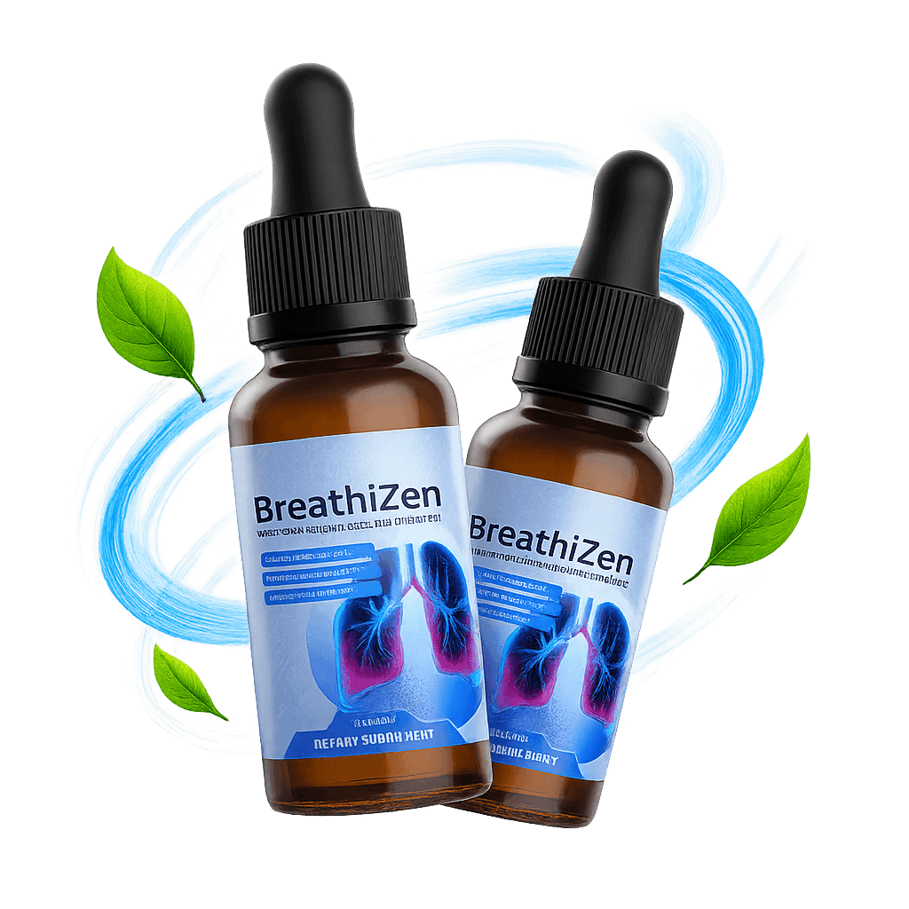
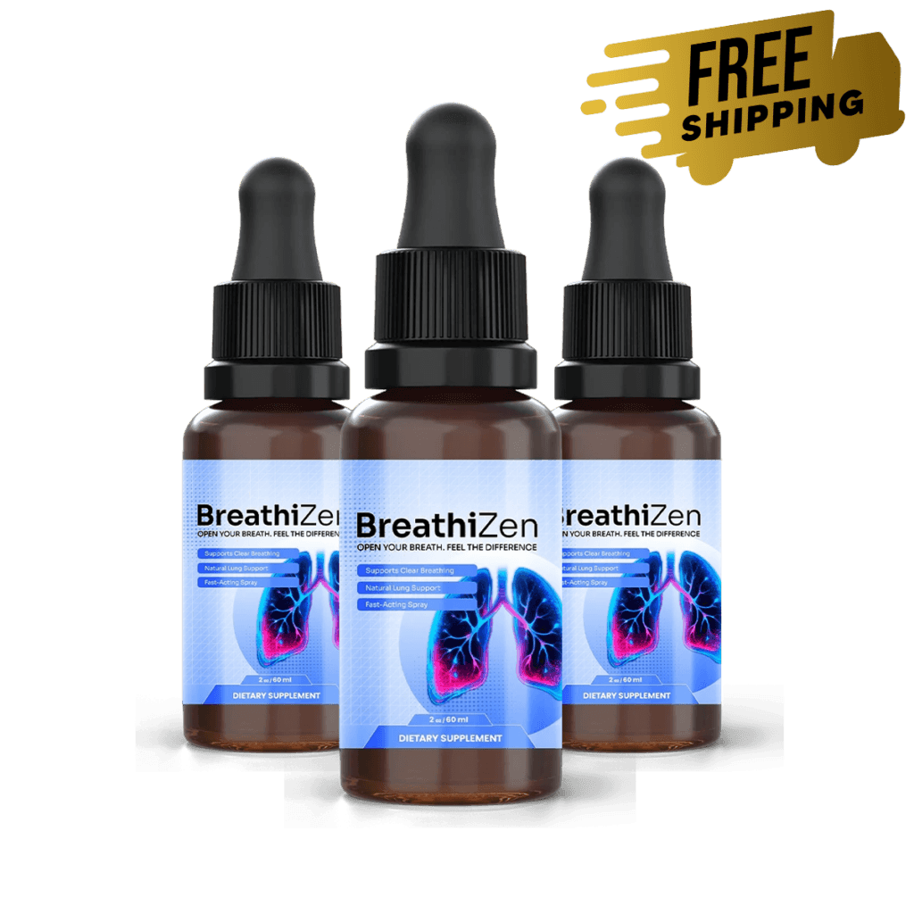
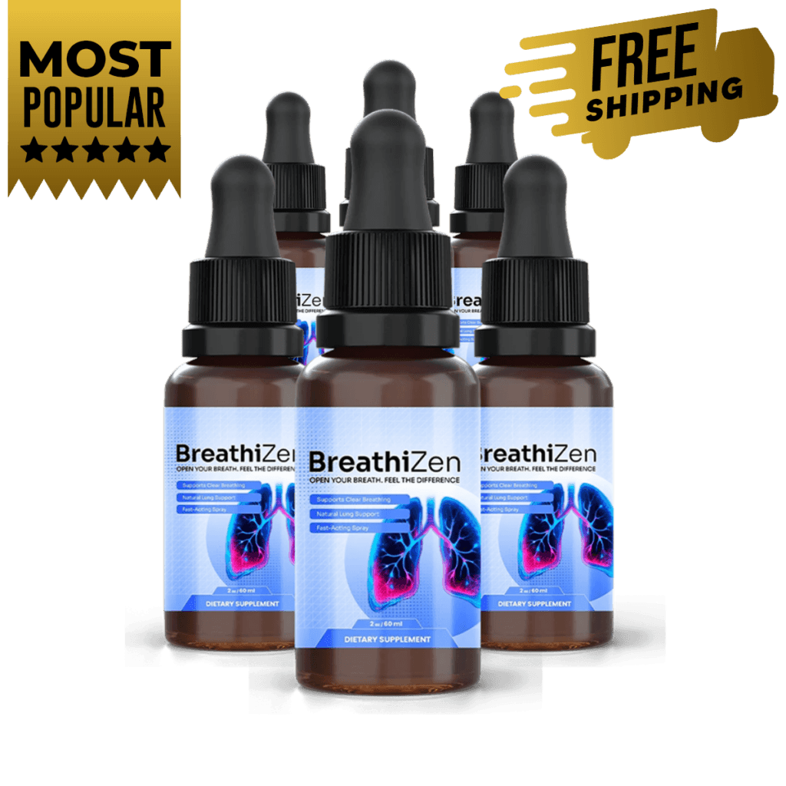

2 BOTTLES
2 Bottles
About 200 servings
$79 / bottle
- A simple first order
- Shipping added at checkout
- No bonuses listed
- 60-day money-back guarantee
$158 + shipping
Check Price: 2 BottlesBreathiZen is a once-a-day oral spray for adults who want a quick, simple morning habit to support clear breathing and healthy lungs alongside clean air, movement and sleep. Four sprays, no pills and no mixing. This site shows you the ingredients, the safety notes and the prices plainly, and says when a doctor is the right call.
| Format | Oral spray, 60 mL (2 fl oz) |
|---|---|
| Serving | 4 sprays (0.60 mL) once daily |
| Packages | 2, 3 or 6 bottles, $79 to $49 each |
| Free US shipping | On 3 and 6 bottles |
| Made for | Adults 18 and over* |
| Not a | Treatment for asthma, COPD or any disease |
Secure payment · 60-day guarantee

An illustration of the breathing theme, not a measurement. The label directions are four sprays (0.60 mL) once daily. Follow your own bottle.
A three-extract list, plain cautions, free US shipping on larger packages and 60 days to decide make the choice easier. Start with the ingredients or safety and interactions.
.svg)
With globally procured ingredients, per the label.
.svg)
Three botanical extracts.
.svg)
As stated by the brand.
.svg)
The label says so, and registration is not approval.
Read the ingredients and the safety notes before you decide.

BreathiZen is a dietary supplement in oral spray form, designed to support clear breathing and healthy lung function as part of a healthy lifestyle.* The serving is four sprays (0.60 mL) once a day. See what BreathiZen is.
Its three named extracts are mullein leaf, ginger root and organic lemon, in one 154 mg blend, and each 60 mL bottle holds about 100 servings. See the ingredients.
It is not a medicine, and it never replaces an inhaler or prescribed treatment.
See BreathiZenBreathiZen comes in packages of two, three and six bottles at $79, $69 and $49 each. Each 60 mL bottle holds about 100 servings, the 3 and 6 bottle packages ship free in the US, the 6 bottle package is listed with free bonuses and every order carries a 60-day money-back guarantee. See the pricing page, the guarantee and safety and interactions.
About 200 servings
$158 + shipping
Check Price: 2 BottlesAbout 600 servings

$294 total
Check Price: 6 BottlesAbout 300 servings
$207 total
Check Price: 3 BottlesSavings are per bottle against the $79 two-bottle price. Confirm the live total, shipping and the refund policy at checkout before you pay.
Price per serving at about 100 servings a bottle, drawn to scale.
The seller covers every order for 60 days from purchase. After at least 30 days of use, if you are not satisfied with the results, the product or the experience, you contact support and ask for a refund. Read the exact terms at checkout. See the refund policy.
From $79 a bottle on two to $49 on six, each with a 60-day guarantee. See pricing.
How easy breathing feels depends on clean air, whether you smoke, how much you move, how you sleep and the medical care you get, and a spray sits well behind all of those. BreathiZen is offered as one small ritual beside them, four sprays in the morning with nothing to swallow.* See breathing wellness daily habits.
The three extracts have a long traditional history, but research on this finished spray is lacking, so this site promises no particular result.* See the benefits.
The limits matter too. It is not for asthma, COPD or any lung condition, and certain symptoms always need a doctor. See when to see a doctor about breathing.
Clean air indoors and out.
Gentle daily activity.
A regular bedtime.
Keep your doctor in the loop.
Tap an item for the short version.*
In short: Named first, concentrated ten to one.*
Mullein (Verbascum thapsus) is a tall, woolly-leaved plant that herbal traditions have used for the throat and chest for a very long time. BreathiZen names its leaf extract first in the 154 mg blend, and the 10:1 means about ten parts of leaf were concentrated into one.
In short: The warming kitchen root.*
Ginger (Zingiber officinale) is the familiar warming root of cooking and traditional wellness. BreathiZen lists its root extract second in the blend, and it is there for its long traditional use and not for any proven effect on breathing.
In short: A fresh citrus finish.*
Organic lemon extract completes the three-part blend. It supplies plant compounds, and it also gives the spray a clean taste that makes a daily morning habit easier.
In short: What carries the botanicals.*
The liquid base is purified water and glycerin, with natural flavors and citric acid for taste, and potassium sorbate and sodium benzoate as preservatives. They are listed under other ingredients on the label.
The label lists mullein leaf extract (10:1), ginger root extract and organic lemon extract as one 154 mg proprietary blend, with no separate amounts. Compare it with the ingredients page and read safety and interactions.
Check the panel on your own bottle.
One 154 mg blend and 60 days to decide. See pricing and the guarantee.
Please read this before you order.
Adults 18 and over who have read the label and want an easy daily morning habit beside clean air and activity.*
Anyone with a lung condition, anyone on asthma, COPD, blood pressure, blood sugar or blood thinning medicine and anyone with surgery planned.
Anyone under 18, and anyone pregnant or nursing without a doctor's advice. It never replaces prescribed treatment.
The label says shake well, then spray four pumps (0.60 mL) into the mouth or onto the tongue once daily, ideally in the morning before the first meal. See how BreathiZen works and how to use it.
Mix the extracts.
0.60 mL in the mouth.
Before the first meal.
Results vary.*
The seller suggests the morning, ideally before the first meal. Choose a cue you already have. This planner is a demo and saves nothing. See the morning routine.
I will take my BreathiZen as my label directs before breakfast.
Tap a day once you have taken it.
The guarantee asks for at least 30 days of use first. See the money-back guarantee.
Spray first thing, then these breathing wellness daily habits for the rest.
Open a window, spray as directed and drink some water.
A walk outdoors, away from smoke and dust.
Stand, stretch and take three slow breaths.
A calm hour and a regular bedtime.
Supportive wellness goals, not guaranteed outcomes. Individual results may vary.*
The central positioning.
Supports comfortable airways.
Everyday support.
Four sprays, nothing to swallow.
Three named extracts.
Once a day, in the morning.
Medicine notes up front.
60 days to decide.
Named reviews with cities and health claims cannot be verified from here, so this site shows plain themes and no star ratings.
BreathiZen comes in packages of two, three and six bottles at $79, $69 and $49 each. Each 60 mL bottle holds about 100 servings, the 3 and 6 bottle packages ship free in the US, the 6 bottle package is listed with free bonuses and every order carries a 60-day money-back guarantee. See the pricing page, the guarantee and safety and interactions.
About 200 servings
$158 + shipping
Check Price: 2 BottlesAbout 600 servings
$294 total
Check Price: 6 BottlesAbout 300 servings
$207 total
Check Price: 3 BottlesSavings are per bottle against the $79 two-bottle price. Confirm the live total, shipping and the refund policy at checkout before you pay.
Price per serving at about 100 servings a bottle, drawn to scale.
The seller covers every order for 60 days from purchase. After at least 30 days of use, if you are not satisfied with the results, the product or the experience, you contact support and ask for a refund. Read the exact terms at checkout. See the refund policy.
Short reads to go with your decision. Back to the ingredients or the prices.
The tall plant behind the first ingredient.
Tradition, nausea research and medicine interactions.
What lemon adds to a daily spray.
BreathiZen is a daily oral spray sold as a dietary supplement to support clear breathing and healthy lung function as part of a healthy lifestyle.* It is not a medicine and not a treatment for asthma, COPD or any other condition.
A 154 mg blend of mullein leaf extract (10:1), ginger root extract and organic lemon extract, in a base of purified water, glycerin, natural flavors, citric acid, potassium sorbate and sodium benzoate. See the ingredients.
Shake well, then spray four pumps (0.60 mL) into the mouth or onto the tongue once a day, ideally in the morning before the first meal. See how BreathiZen works and how to use it.
Each 60 mL bottle holds 100 servings at 0.60 mL, so one bottle lasts about 100 days at one serving a day. Check the servings per container on your own label.
No. It is not intended to diagnose, treat, cure or prevent any disease, and it never replaces an inhaler or prescribed treatment.
Anyone pregnant, nursing, under 18 or with a known medical condition, and anyone who takes medicine for asthma, COPD, blood pressure, blood sugar or blood thinning. See safety and interactions.
The seller says it is made only from naturally derived ingredients, but a supplement can still disagree with some people. Stop using it and ask a doctor if you notice a reaction, and seek care for any difficulty breathing.
Results vary and there is no promised timeline. Use it consistently with healthy habits and do not delay medical care while you wait.
Two bottles are $79 each ($158 plus shipping), three are $69 each ($207, free US shipping) and six are $49 each ($294, free US shipping). See pricing and confirm every total at checkout.
The seller lists free digital bonuses with the 6 bottle package. Confirm exactly what is included at checkout.
| Proprietary blend | 154 mg: mullein leaf extract 10:1, ginger root extract, organic lemon extract |
| Other ingredients | Purified water, glycerin, natural flavors, citric acid, potassium sorbate, sodium benzoate |
| Origin | Made in the USA with globally procured ingredients, in an FDA-registered facility |
| Not for | Anyone under 18 |
Built from the seller's published label text, not a copy of the Supplement Facts panel. Your own bottle has the last word.
The label names a 154 mg proprietary blend of mullein leaf extract (10:1), ginger root extract and organic lemon extract, a base of purified water, glycerin, natural flavors, citric acid, potassium sorbate and sodium benzoate, a serving of four sprays (0.60 mL) and 100 servings per 60 mL bottle.
It also says made in the USA with globally procured ingredients, in an FDA-registered facility, and not for anyone under 18. See the ingredients and Supplement Facts.
Read safety and interactions, ask your doctor if you take medicine, then see the live price, shipping and refund terms at the secure checkout.
Secure checkout
Independent sources on lung health, ginger, mullein and supplements. None of them tested BreathiZen itself, and they are not affiliated with it. See also the ingredients.